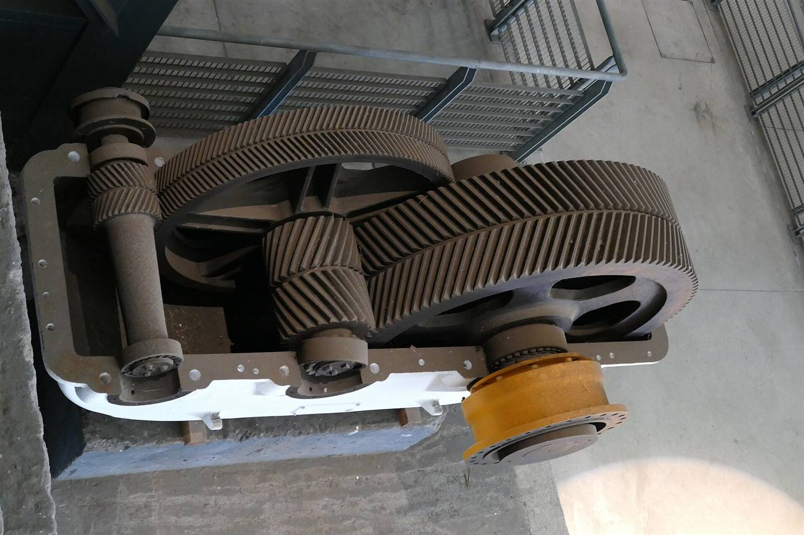
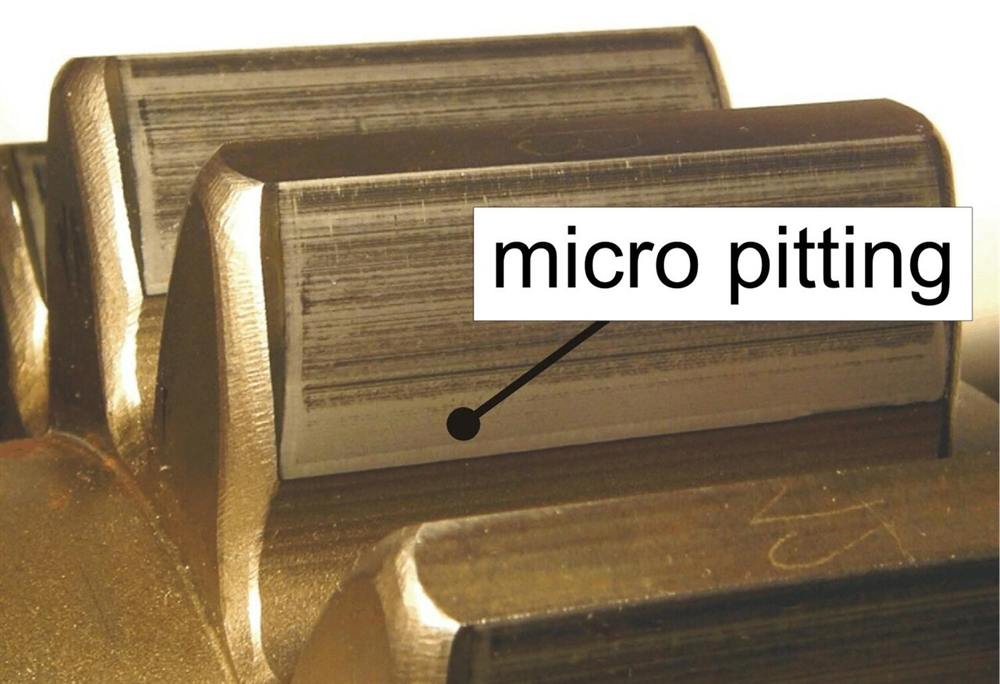
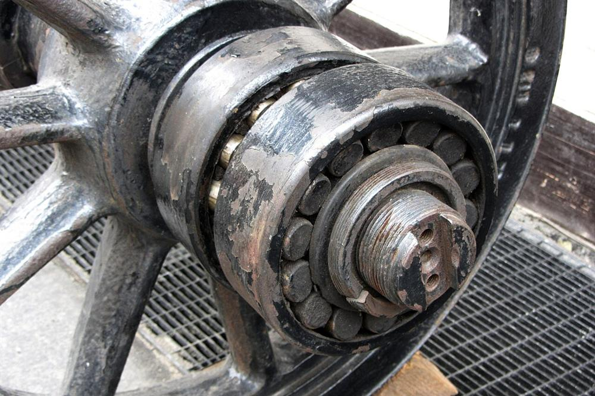

Services
Photo : Lufkin Industries
Du diagnostic à la remise en service
Des prestations sur site et en atelier pour garder vos transmissions disponibles, fiables et documentées.

Sur site
Intervention sur site
Nos techniciens interviennent sur votre installation, en arrêt programmé ou en urgence.
- Montage, calage et alignement (comparateur, laser)
- Assistance à la mise en service et premier démarrage
- Dépose / repose des lignes d’arbres, remplacement de roulements, paliers et joints
- Relevés de jeux, contrôle de portée de denture, couples de serrage
- Rapport d’intervention complet avec photos et mesures

Diagnostic
Expertise et diagnostic
Comprendre l’état de votre réducteur pour décider au bon moment : surveillance, réparation ou remplacement.
- Inspection des dentures par trappe de visite ou endoscopie
- Relevé de portée au bleu, détection de pitting, micro-pitting et chocs
- Analyse vibratoire et suivi des températures paliers
- Interprétation des analyses d’huile
- Expertise après avarie et recommandations

Atelier
Réparation et révision
Remise en état complète de votre réducteur en atelier, pour les appareils Lufkin, Allen Gears et d’autres constructeurs.
- Démontage, nettoyage et expertise complète
- Remplacement des roulements, coussinets et joints
- Remplacement ou réparation des dentures
- Contrôles dimensionnels et remontage selon les tolérances
- Essais avant expédition
Pièces et modernisation
Pièces de rechange, modernisation, formation
📦
Pièces de rechange
- Pignons, roues et arbres
- Roulements et coussinets
- Joints, douilles de frottement
- Accouplements
⬆
Modernisation et re-rating
- Augmentation de puissance ou de vitesse
- Nouvelles dentures et paliers
- Instrumentation de surveillance
- Adaptation à une nouvelle application
🎓
Formation et contrats
- Formation de vos équipes de maintenance
- Plans de maintenance préventive
- Visites périodiques
- Suivi de la base installée
Un projet, une avarie, un arrêt programmé ?
Décrivez votre besoin, nous revenons vers vous avec une proposition.